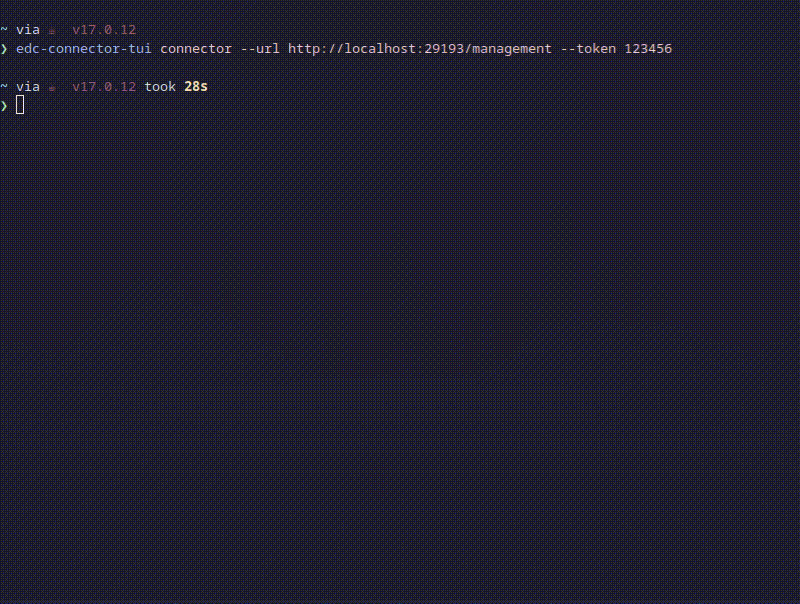

edc-connector-tui
EDC Connector TUI



Install
Fetch a latest release here
or install with cargo
cargo install edc-connector-tui
Run
The TUI client can either run with a single connector configured via cli args:
edc-connector-tui connector --url http://localhost:29193/management --token 123456
or if no args provided it will try to read connectors configuration from the file at ~/.config/edc-connector-tui/config.toml
The file should contain the list of configured connectors:
[[connectors]] name="FirstConnector" address="http://localhost:29193/management" auth= { type = "token", token_alias = "connector_alias" } [[connectors]] name="SecondConnector" address="http://myconnector.xyz/management"
The token_alias is used to fetch the actual token from the system keyring for the service edc-connector-tui.
Supported auth types:
{ type = "no-auth" }(default whenauthis omitted){ type = "token", token_alias = "..." }sends the token in theX-Api-Keyheader{ type = "bearer-token", token_alias = "..." }sends the token asAuthorization: Bearer <token>{ type = "oauth2", client_id = "...", token_url = "...", secret_alias = "..." }fetches a token via OAuth2 client credentials{ type = "token-exchange", token_exchange_url = "...", subject_token_file = "..." }exchanges a workload credential for a JWT via OAuth2 Token Exchange (RFC 8693), sent asAuthorization: Bearer <token>
For token-exchange the subject token comes from exactly one of subject_token_file (a path, re-read on every exchange so rotated credentials are picked up) or subject_token_alias (a keyring alias, like token_alias). Optional fields: resource (defaults to the connector's participant_context_id), audience (defaults to edcv) and scopes (defaults to ["management-api:read", "management-api:write"]):
[[connectors]] name="Provider" address="http://localhost:29193/management" api_version="v5" participant_context_id="provider" [connectors.auth] type="token-exchange" token_exchange_url="http://jwtlet:8080/token" subject_token_file="/var/run/secrets/jwtlet/token" scopes=["management-api:read", "management-api:write"]
For configuration above the token could be set with secret-tool on Linux:
secret-tool store --label="FirstConnector" service edc-connector-tui username connector_alias
Managing connectors from the TUI
Connectors can also be added, edited and deleted from the Connectors view, so the config file
does not have to be written by hand:
aopens the form to add a connector,eedits the highlighted one andddeletes it (after ay/nconfirmation).tabandshift+tabmove through every field,entermoves to the next field (and submits onConfirm),up/down(orctrl-k/ctrl-j) jump between rows,left/rightmove within a row andesccloses the form.API versionandAuth typeare choice fields:space(orl) cycles to the next value andbackspace(orh) to the previous one. Changing the auth type swaps the auth specific fields.- Every change is written back to the config file (
~/.config/edc-connector-tui/config.tomlor the--configfile). The file is regenerated from the current connectors, so comments in it are not preserved. If the file does not exist yet the TUI starts with an empty list and creates it on the first save. - Secrets (API token, OAuth2 client secret, subject token) are optional fields next to their alias: a non-empty value is stored in the system keyring under the service
edc-connector-tuiwith the alias as username (the same entrysecret-toolcreates above). Leave it blank to keep the secret already stored for that alias.
When running with the connector subcommand there is no config file: changes are kept in memory only.
Admin workspace (v5)
Connectors speaking the v5 management API (api_version = "v5") expose the global, participant
independent resources of an EDC-V deployment. The TUI keeps them in a separate Admin workspace so
they do not mix with the day-to-day views:
ctrl+atoggles between theOperationsand theAdminworkspace; the launch bar accepts:adminand:opsas well.tab/shift+tabonly cycle through the entries of the active workspace, and each workspace remembers the last view you were in. Switching is refused for v3 and v4 connectors.- The admin views are
Participants,DataspaceProfiles,CelExpressions,CachedDocuments,DcpScopesandSchemaValidators. The launch bar reaches them directly with:participants,:profiles,:cel,:cache,:scopesand:schemas. - Every admin view supports
a(add),e(edit) andd(delete, after ay/nconfirmation) through the same forms as the connectors view, from the list and from the detail view (enter). Some views have extra actions:ttests a CEL expression against an operator, a right operand andctxparameters;umakes the connector fetch a cached document again;lassociates dataspace profiles with a participant andcedits its configuration. Open the participant detail withenterfirst solandcare pre-filled with the current values. - Form conventions: lists (scopes, actions, profiles, JSON-LD context URLs) are comma separated; structured values (trusted issuers, cached document content, properties, config entries) are typed as single-line JSON; a blank id lets the connector generate one; ids and profile names cannot be changed when editing.
- The admin APIs require a token with the
management-api:adminscope, e.g. for token exchange:
[connectors.auth] type="token-exchange" token_exchange_url="http://jwtlet:8080/token" subject_token_file="/var/run/secrets/jwtlet/token" scopes=["management-api:admin"]
Altough
edc-connector-tuibuilds for OSX and Windows are available, it has been only tested on Linux. Contributions are welcome for multiplatform support/testing